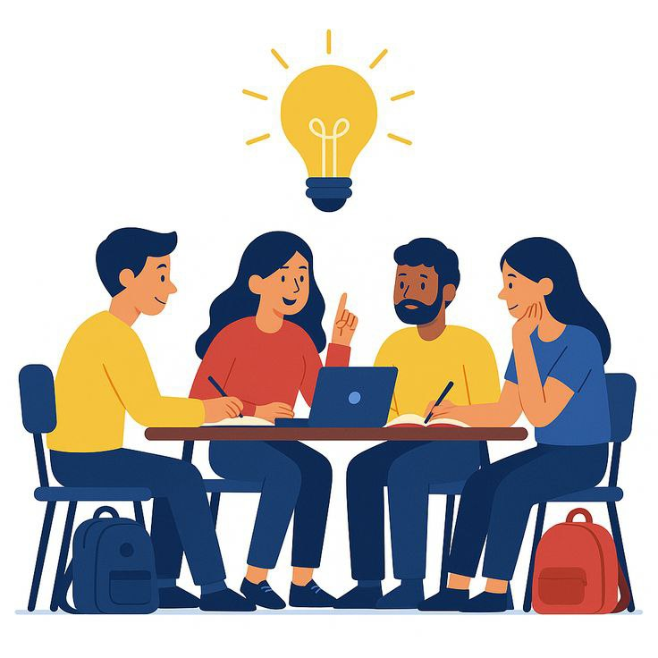
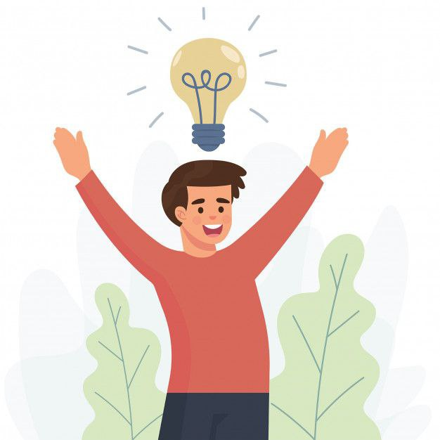

Family Introduction
My family means everything to me. We help each other grow, stay strong during challenges and celebrate every small or big achievement together. Each member has their own unique personality that makes our home full of warmth and happiness
My Family Members
Father
His name is Mohammad Faizol bin Junid and he's 25 years old. He works as a teacher at SKPA 2 and is still serving at the same school, teaching English and IT. He's the head of our family, someone who never gives up and works hard. Also enjoys playing bowling
Mother
Her name is Nor Salwani binti Ahmad and she's 25 years old. She works as a teacher at SAMPJ and teaches Economics and English. She's the assistant head in our family, cheerful and never stingy. Just like our head of the family, she's also active in playing badminton
Me
My name is Mohammad Izwan Hakimi bin Mohammad Faizol and I'm 20 years old. I'm a student at UiTM Kelantan Campus, currently in the 5th semester of the Diploma in Information Management. I'm the oldest child in my family and have three siblings. Like my parents, I enjoy playing bowling and badminton as hobbies when I am at home
Brother
His name is Mohammad Izwan Hafizi bin Mohammad Faizol and he's 18 years old. He studies at MITS Sabak Bernam and is taking his SPM exam this year (2025). He has memorized all 30 juz of the Quran and lives in a hostel. When he comes home, the house becomes lively because of his presence. He's also good at playing badminton and bowling
Sister
Her name is Nor Aufa Hannani binti Mohammad Faizol and she's 11 years old. She studies at SKPA2, the school where my father teaches and recently she took the UPKK exam. She's one of my younger sisters and the most spoiled and stubborn in the family. Even so, she likes to explore new things on her own
Bingo
Her name is Bingo and she's the oldest female cat in our family. We adopted her in 2015 and now she has been with us for more than 10 years. Among all our cats, she's the most active. She likes to cause trouble and run around the house. Her favorite hobbies are just eating and sleeping
Yaya
His name is Yaya and he's the only male child of Bingo who is still alive. I don’t remember the exact year he was born but he has been in our family for over 7 years. Unlike Bingo, he is very passive and very picky with food. He doesn’t like fresh fish, only fried chicken. He's also strange when it comes to eating because he likes to eat things that other cats don’t like fried noodles
Gebu
Her name is Gebu and she's a cat that we don’t know where she came from. At first, she came to our house and we just fed her because she looked hungry at that time. Since then, she keeps coming to our house and now our whole family treats her like an adopted child. She is the most affectionate female cat with our family. When it comes to food, she eats everything we give her
Our Family Values
-
Honesty: For us, honesty is important so that we can all stay happy forever
-

Teamwork: We will work together and always support each other
-
Regardless: We won’t be stingy with anyone because our fortune also includes the fortune of others
-

Hapiness: We should always stay happy no matter what happens
-
Hardwork: need to work hard to live happily forever
Family Activities
Bowling
Our family really enjoys playing bowling and badminton during the weekends
Vacation
This picture was taken a few months ago when we went for a vacation in Port Dickson
Visit
When my second younger sibling was taking SPM, we visited him at his school every week
Visit 2#
Because my grandfather (my mother's father) is sick and in the hospital, we also visit him every week
Dinner
Sometimes we have dinner together to spend time with each other
Calm Down
We also usually go to the lake to relieve stress and clear our minds
"Family is where life begins and love never ends"